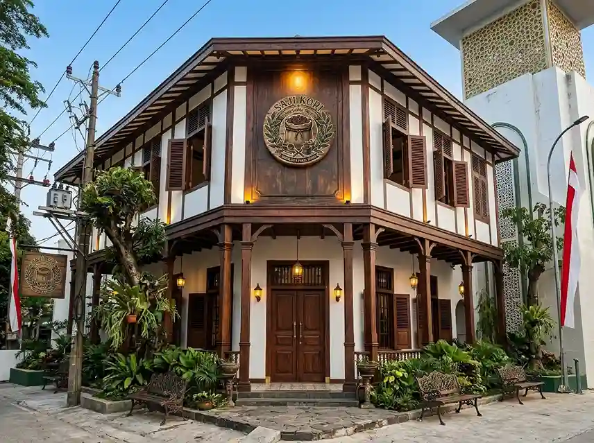
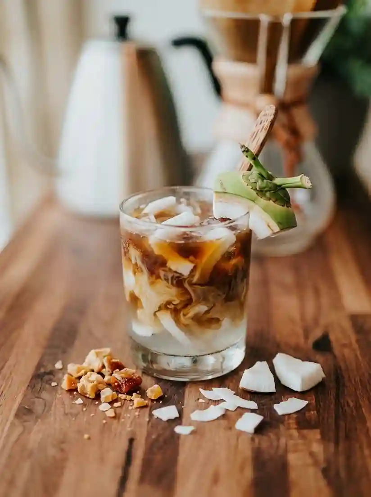

Batang Coffee Heritage
Kopi Saji
Seduhan lokal pilihan buat nemenin kamu nugas, kerja, atau sekadar lepas penat bareng temen.

Lokasi & Jam Operasional
Alamat Kedai
Jl. Veteran No. 12, Kabupaten Batang
Jam Layanan
Setiap Hari (10.00 - 22.00 WIB)
Layanan Pelanggan
Hubungi via WhatsApp Kopi Saji Batang
Menu Favorit
Empat racikan andalan yang paling sering dipesan pelanggan setia kami.

Kopi Saji Signature
Rp20kBlend robusta-arabika khas Batang dengan hint cokelat & karamel.

Cold Brew Aren
Rp20kDiseduh dingin 12 jam, dipadukan manis alami gula aren lokal.

Americano Peach
Rp22kDouble shot espresso dengan sentuhan manis-segar buah peach.

Es Kopi Kelapa Muda
Rp23kEspresso bertemu santan kelapa muda asli dan es batu, ringan dan segar.